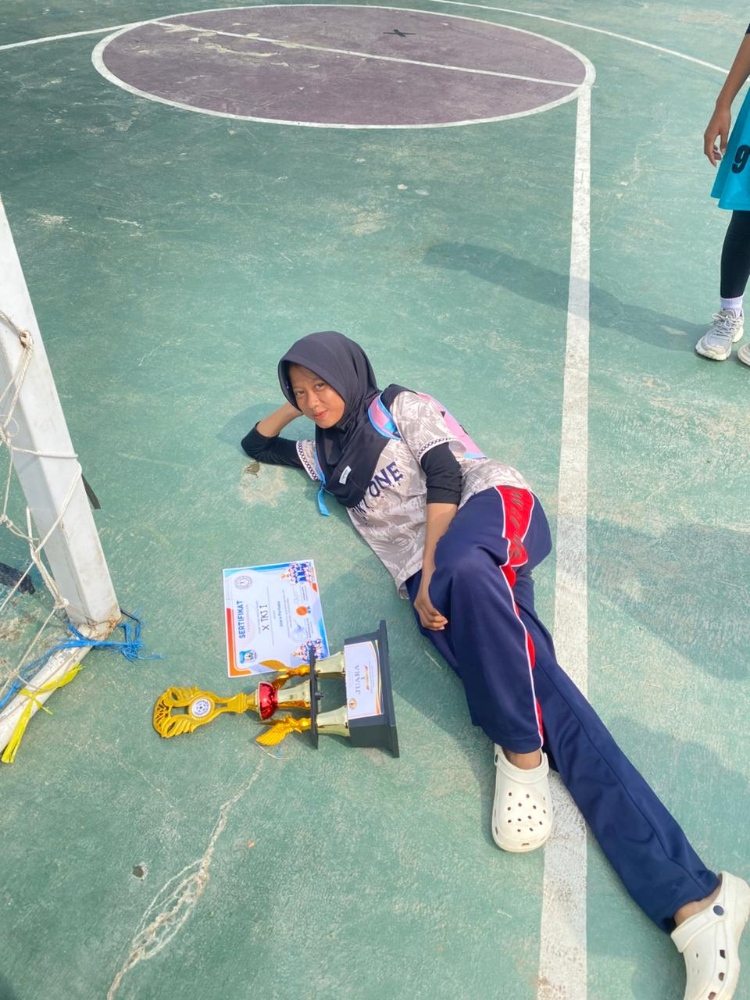

Welcome to my website
klik disini
Pelajar | XI TJKT 1
Siswa SMK Negeri 1 Leuwimunding. Saya tertarik mempelajari teknologi, komputer, jaringan, dan pemrograman.
2025 - Sekarang
Teknik Jaringan Komputer dan Telekomunikasi
2022 - 2025
2017 - 2022
2025 - 2025
Berpartisipasi dalam kegiatan dan program kerja bersama anggota.
Beberapa kemampuan yang saya pelajari:
Masak Jaringan Komputer